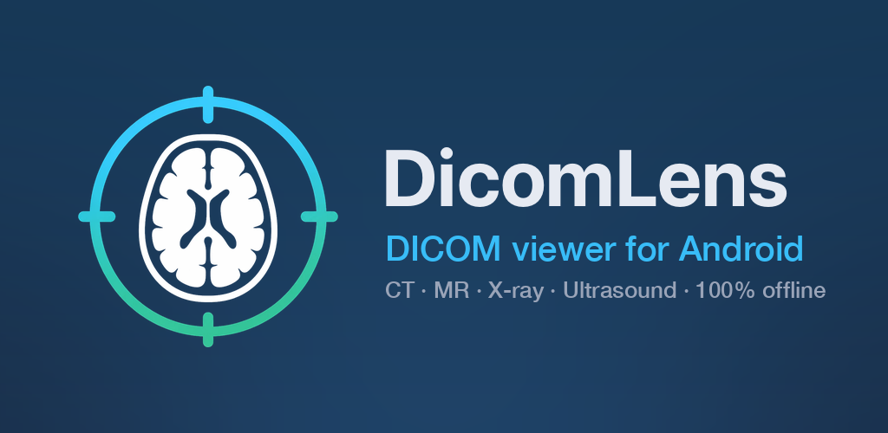

DicomLens
DICOM viewer for Android · private & offline

Open CT, MRI, X-ray, ultrasound and angiography studies straight from files, folders or ZIP archives. Window/level with one finger, CT presets, pinch-zoom, cine playback, series scrolling, length and angle measurements, a full DICOM tag browser — all decoded locally with no account and no upload.
Get it on Google PlaySupported formats
- Explicit / Implicit VR Little Endian, encapsulated pixel data
- JPEG 2000 (lossless & lossy), JPEG Lossless, RLE, JPEG baseline
- 8/12/16-bit grayscale (signed/unsigned), MONOCHROME1/2, RGB, palette colour, multi-frame
Privacy
Nothing leaves your device. Read the privacy policy.